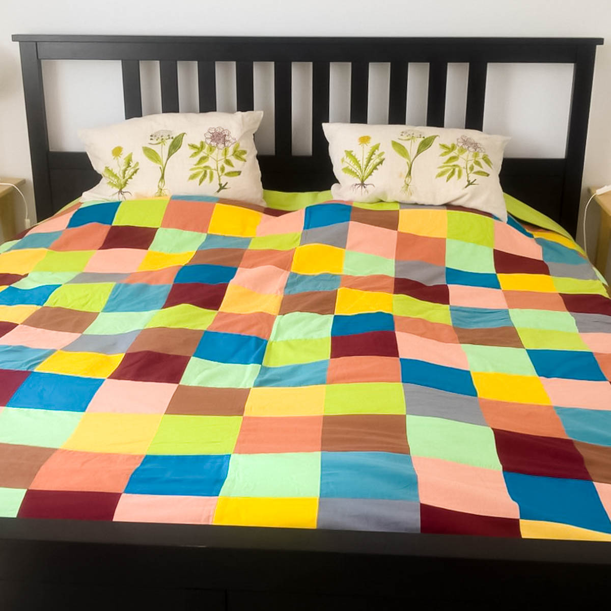

Paturi Dormitor Moderne si Clasice Retro Boutique

Transport gratuit pentru comenzile de peste 700 lei
Contactează-ne 031 228 5140
Luni - Vineri: 9AM - 5:30PM, Sâmbătă: 10AM - 6PM Login Login via FacebookSAU
Wishlist Coș Nu sunt produse adaugate in cos Noutati Mobilă Mobilă living Seturi living Vitrine Colțare Canapele Canapea fixă Canapea piele Canapea extensibilă Fotolii Fotoliu living Fotoliu balansoar Fotolii piele Fotolii extensibile Măsuțe de cafea Comode Comode living Comode TV Mobilă dormitor Saltele Mese de toaletă Comode și noptiere Dulapuri haine Paturi Pat o persoană Pat lemn Pat metalic Paturi tapițate Paturi matrimoniale Mobilă dining Mobilier bar Seturi bucătărie Bufete Scaune de bar Scaune Scaune dining Mese Mese dining Mese extensibile Mobilă hol Oglinzi Pantofare Cuiere Console Banchete Taburete Mobilă birou Scaune de birou Biblioteci și etajere Birouri Mobilă baie Baterii și lavoare Seturi de baie Dulapuri Mobilier individual Accesorii mobilier Paravane Cufere Mobilă grădină și terasă Mese și scaune Decorațiuni Oglinzi Decorațiuni interioare Decorațiuni de perete Covoare Vaze Tablouri Ceasuri Rame foto Sfeșnice și felinare Decorațiuni de grădină Corpuri de iluminat Lustre Candelabre Veioze Aplice Plafoniere Lampadare Iluminat exterior Decorațiuni luminoase Textile Perdele Draperii Perne Lenjerii de pat Pături și cuverturi Covorașe intrare Perne de exterior Baie Covorașe de baie Textile de baie Perdele de duș Accesorii de baie Bucătărie Suport sticle Tăvi servire și platouri Fețe de masă Servicii de masă Tacâmuri Pahare Farfurii Suporturi farfurii și pahare Căni și cești Accesorii bucătărie Reduceri Retro Boutique Mobilă Mobilă dormitor PaturiPaturi
298 produse
Filtre
Subcategorii
Mobilă Mobilă living Seturi living Vitrine Colțare Canapele Canapea fixă Canapea piele Canapea extensibilă Fotolii Fotoliu living Fotoliu balansoar Fotolii piele Fotolii extensibile Măsuțe de cafea Comode Comode living Comode TV Mobilă dormitor Saltele Mese de toaletă Comode și noptiere Dulapuri haine Paturi Pat o persoană Pat lemn Pat metalic Paturi tapițate Paturi matrimoniale Mobilă dining Mobilier bar Seturi bucătărie Bufete Scaune de bar Scaune Scaune dining Mese Mese dining Mese extensibile Mobilă hol Oglinzi Pantofare Cuiere Console Banchete Taburete Mobilă birou Scaune de birou Biblioteci și etajere Birouri Mobilă baie Baterii și lavoare Seturi de baie Dulapuri Mobilier individual Accesorii mobilier Paravane Cufere Mobilă grădină și terasă Mese și scaune Decorațiuni Oglinzi Decorațiuni interioare Decorațiuni de perete Covoare Vaze Tablouri Ceasuri Rame foto Sfeșnice și felinare Decorațiuni de grădină Corpuri de iluminat Lustre Candelabre Veioze Aplice Plafoniere Lampadare Iluminat exterior Decorațiuni luminoase Textile Perdele Draperii Perne Lenjerii de pat Pături și cuverturi Covorașe intrare Perne de exterior Baie Covorașe de baie Textile de baie Perdele de duș Accesorii de baie Bucătărie Suport sticle Tăvi servire și platouri Fețe de masă Servicii de masă Tacâmuri Pahare Farfurii Suporturi farfurii și pahare Căni și cești Accesorii bucătărieCaracteristici
Caracteristici: Pe stoc , (2) Caracteristici: La comandă , (296) Caracteristici: Promotii , (2)Pret
leiStil
Stil: Contemporan , (132) Stil: Industrial , (1) Stil: Rustic Urban , (28) Stil: Scandinav , (95) Stil: Clasic , (48) Mai multe opțiuni Stil: Romantic , (22) Stil: Exotic , (4) Stil: Rustic , (1) Stil: Colonial , (1) Stil: Modern , (2)Brand-uri
Brand-uri: Inart , (1) Brand-uri: Farmhouse , (23) Brand-uri: Design Fever , (25) Brand-uri: Halmar , (24) Brand-uri: Pako World , (30) Mai multe opțiuni Brand-uri: Karup , (89) Brand-uri: SIT Mobel , (1) Brand-uri: Signal Meble , (57) Brand-uri: Windsor & Co. , (24) Brand-uri: Mobilia , (6) Brand-uri: RETRO , (6) Brand-uri: LivinHill , (11)Culoare
Gri , Bej , Multicolor , Alb , Negru , Roz , Ivoire , Albastru , Maro , Verde , Bleu , Argintiu , Crem , Turcoaz , Grena , Bleumarin , Bordo , Oliv , maro deschis ,Material
Material: Metal , (30) Material: Lemn , (223) Material: Textil , (172) Material: Poliester , (86) Material: PAL , (3) Mai multe opțiuni Material: PVC , (8) Material: Ecopiele , (8) Material: PU , (27) Material: Catifea , (13) Material: Piele ecologica , (2) Material: Oțel cromat , (1) Material: Pin , (1)Timp de livrare
Timp de livrare: 2 săptămâni , (43) Timp de livrare: 4 săptămâni , (2) Timp de livrare: 4 - 6 săptămâni , (68) Timp de livrare: 6 săptămâni , (28) Timp de livrare: 14 săptămâni , (8) Mai multe opțiuni Timp de livrare: 1 săptămână , (31) Timp de livrare: 7 săptămâni , (25) Timp de livrare: 3 săptămâni , (3) Timp de livrare: 22 săptămâni , (89) Timp de livrare: 2 - 4 zile , (1)Rating
Rating: 5 stele , (231) Rating: 4 stele , (284) Rating: 3 stele , (295) Rating: 2 stele , (295) Rating: 1 stea , (295)Dimensiune
Dimensiune: 140x200 , (28) Dimensiune: 180x200 , (29) Dimensiune: 160x200 , (70) Dimensiune: 90x200 , (32) Dimensiune: 90x190 , (6) Mai multe opțiuni Dimensiune: 140x190 , (5) Dimensiune: 120x200 , (6) Dimensiune: 200x200 , (6)Paturi
298 produse
Cele mai populare Cele mai noi Cele mai vandute Pret crescator Pret descrescator Alfabetic A-Z Alfabetic Z-A Nr. review-uri Nota rating Procent discount Valoare discountPat o persoană
Pat lemn
Pat metalic
Paturi tapițate
Paturi matrimoniale
LIVRARE GRATUITĂ
Pat dublu Cassandra 160x200
2099 lei Vezi detaliiLIVRARE GRATUITĂ
Pat din lemn masiv Domus, molid, natur
2989 - 3559 lei Vezi detaliiLIVRARE GRATUITĂ
Pat din lemn masiv Baxton, molid, natur
3989 - 4559 lei Vezi detaliiLIVRARE GRATUITĂ
Pat negru din piele ecologică Samanta
2409 lei Vezi detalii Alege culoareaTRANSPORT PREMIUM INCLUS
Pat din lemn Austral, lemn de brad, multicolor
1450 - 2103 lei Vezi detaliiLIVRARE GRATUITĂ
Pat din lemn Nova 160 x 200 cm, molid, natur
4279 lei Vezi detaliiLIVRARE GRATUITĂ
Pat tapițat cu LED Skyline 180x200 cm alb/gri
6209 lei Vezi detaliiLIVRARE GRATUITĂ
Pat din lemn Nova 200 x 200 cm, molid, natur
4629 lei Vezi detaliiLIVRARE GRATUITĂ
Pat box spring cu LED Charlton Grey, 180 x 200 cm, ecopiele, alb/gri
5129 lei Vezi detaliiLIVRARE GRATUITĂ
Pat tapițat cu ramă LED Lane, 180 x 200 cm, ecopiele, alb/negru
3349 lei Vezi detaliiLIVRARE GRATUITĂ
Pat tapițat cu LED Harding 180x200 cm alb/gri
6209 lei Vezi detaliiLIVRARE GRATUITĂ
Cadru de pat Burma, 200 x 200 cm, lemn de acacia, natur
3279 lei Vezi detaliiLIVRARE GRATUITĂ
Pat tapițat cu LED Norbert 180x200 cm alb/gri
6209 lei Vezi detaliiLIVRARE GRATUITĂ
Pat tapițat cu ramă LED Stanis, 180 x 200cm, ecopiele, alb/negru
3349 lei Vezi detaliiLIVRARE GRATUITĂ
Pat cu dublă tăblie Ingrid Valls B
2024 lei Vezi detaliiLIVRARE GRATUITĂ
Pat cu dublă tăblie Ingrid Valls C
2241 lei Vezi detaliiLIVRARE GRATUITĂ
Cadru de pat Burma, 180 x 200 cm, lemn de acacia, natur
3139 lei Vezi detaliiLIVRARE GRATUITĂ
Pat tapițat cu ramă LED Lane, 140 x 200cm, ecopiele, alb/negru
3209 lei Vezi detaliiLIVRARE GRATUITĂ
Pat tapițat box spring cu LED Avenue, 180 x 200 cm, catifea, negru
4059 lei Vezi detaliiLIVRARE GRATUITĂ
Pat din lemn Copilarii 90x190
1159 lei Vezi detaliiLIVRARE GRATUITĂ
Pat box spring cu LED Charlton alb, 200 x 200 cm, ecopiele, alb/gri
5489 lei Vezi detaliiLIVRARE GRATUITĂ
Pat din lemn Nova 180 x 200 cm, molid, natur
4419 lei Vezi detaliiLIVRARE GRATUITĂ
Pat din lemn Nova 140 x 200 cm, molid, natur
3989 lei Vezi detaliiLIVRARE GRATUITĂ
Pat box spring cu LED Charlton alb, 180 x 200 cm, ecopiele, alb/gri
5129 lei Vezi detaliiLIVRARE GRATUITĂ
Tăblie de pat Nettie
1839 lei Vezi detaliiLIVRARE GRATUITĂ
Tăblie de pat Vegas, bleumarin, 224(180)x20x120 cm
1809 lei Vezi detaliiLIVRARE GRATUITĂ
Pat tapițat cu LED Riva 180x200 cm alb/gri
6209 lei Vezi detaliiLIVRARE GRATUITĂ
Pat tapițat cu ramă LED Stanis, 140 x 200cm, ecopiele, alb/negru
3209 lei Vezi detaliiLIVRARE GRATUITĂ
Cadru de pat Burma, 160 x 200 cm, lemn de acacia, natur
2989 lei Vezi detaliiLIVRARE GRATUITĂ
Tăblie de pat Vegas, bleumarin, 244(200)x20x120 cm
1999 lei Vezi detaliiLIVRARE GRATUITĂ
Cadru de pat Burma, 140 x 200 cm, lemn de acacia, natur
2849 lei Vezi detaliiLIVRARE GRATUITĂ
Tăblie de pat Vegas, argintiu, 244(200)x20x120 cm
1999 lei Vezi detaliiLIVRARE GRATUITĂ
Pat tapițat box spring cu LED Avenue, 180 x 200 cm, catifea, gri
4059 lei Vezi detaliiLIVRARE GRATUITĂ
Pat de două persoane Loren 160x200
1099 lei Vezi detaliiLIVRARE GRATUITĂ
Pat Scot White 150x200
789 lei Vezi detaliiLIVRARE GRATUITĂ
Pat tapițat cu LED Latham 180x200 cm alb/gri
6209 lei Vezi detaliiLIVRARE GRATUITĂ
Pat box spring cu LED Charlton Grey, 200 x 200 cm, ecopiele, alb/gri
5489 lei Vezi detaliiLIVRARE GRATUITĂ
Pat tapițat Rafael Dark Blue 150x200
1089 lei Vezi detaliiLIVRARE GRATUITĂ
Tăblie de pat Vegas, gri, 204(160)x20x120 cm
1709 lei Vezi detaliiLIVRARE GRATUITĂ
Tăblie de pat Vegas, albastru pastel, 244(200)x20x120 cm
1999 lei Vezi detaliiLIVRARE GRATUITĂ
Tăblie de pat Vegas, grena, 204(160)x20x120 cm
1709 lei Vezi detaliiLIVRARE GRATUITĂ
Tăblie de pat Vegas, grena, 184(140)x20x120 cm
1619 lei Vezi detaliiLIVRARE GRATUITĂ
Tăblie de pat Vegas, bej, 184(140)x20x120 cm
1619 lei Vezi detaliiLIVRARE GRATUITĂ
Pat tapițat Rafael Dark Blue 120x200
1039 lei Vezi detaliiLIVRARE GRATUITĂ
Pat dublu Desi Brown Matte 160x200
1009 lei Vezi detalii 1 2 3 4 5 6 7 Pagina 1 din 7Patul reprezintă dincolo de orice îndoială piesa centrală a dormitorului. Datorită dimensiunilor sale, toate atributele care îl definesc (materialul cadrului, cromatică, ornamentaţie) vor domina decorul. Toate celelalte piese de mobilă, decoraţiunile şi chiar draperiile trebuie alese în consecinţă. Paturi cu baldachin şi cadru metalic, paturi shabby chic cu tăblii pictate sau paturi tapiţate, cu ramă din metal sau din lemn, paturi duble sau de o persoană - Retro Boutique vă invită să alegeţi online pe cel mai potrivit pentru dumneavoastră.
Ştiţi deja: ne petrecem un sfert din viaţă dormind, deci patul reprezintă un element de mobilier foarte important în economia zilei (sau mai degrabă a nopţii). Cum îl alegem? Întâi de toate, alegem între un pat single sau pat de 2 persoane. Apoi, orice pat trebuie să fie confortabil şi funcţional. Rezistenţa joacă şi ea un rol important, iar aici o atenţie deosebită trebuie acordată alegerii cadrului, fie el din lemn sau metal. Decorativ vorbind, patul cu cadru din lemn este potrivit în interioare rustice sau clasice. Pentru amenajări contemporane sau cu note masculine, puteţi opta pentru un cadru metalic vopsit în culori închise sau pentru un pat tapiţat. Vorbind despre completare, avem online la Retro Boutique o sumedenie de modele de noptiere ce pot fi aşezate de o parte şi de alta, precum şi lenjerii şi elegante seturi de cuverturi cu feţe de pernă. Foarte căutate sunt paturile albe (un pat alb reîmprospătează întodeauna atmosfera şi aduce cu sine un aer romantic). Vă lăsăm dar să descoperiţi modelele grozave ale acestei secţiuni de mobila pentru dormitor.
Produsul a fost adaugat in cos
Cod produs:
Cantitate:
« Înapoi la cumpărături! Vezi cosProdusul NU a fost adaugat in cos
×
Popup de cerere oferta
× Popup de cerere oferta Continua cumparaturile Vezi cosPopup de alerta stoc
× Popup de alerta stoc Continua cumparaturile Vezi cosLivrare gratuită
la peste 700 de leiDrept de retur
30 zilePersonalizare
a peste 400 de produsePlata în rate
până la 5 rate fără dobândăPentru detalii suplimentare sau comandă, ne poți contacta la
031 228 5140 contact@retroboutique.ro
Luni - Vineri: 9AM - 5:30PM, Sâmbătă: 10AM - 6PMDespre noi
Despre Retro Boutique Showroom Blog Retro Boutique Branduri Consiliere amenajări interioare Clubul Designerilor Ce spun clienții noștri ContactContactează-ne
Sună-ne!
Luni - Vineri: 9AM - 5:30PM, Sâmbătă: 10AM - 6PM
Showroom: METAV Business Park, str. Biharia 67-77, corp I
contact@retroboutique.ro
031 228 5140
Info utile
Cum cumpăr? Cum plătesc? Politica de returnare Condiții de garanție Întrebări frecvente Condiții de livrare Confidențialitate Termeni și condiții ANPC Platforma SOLUltimele articole
Lasă stilul să vorbească pentru tine! Fantezia excentricității. Stilul exotic care te aduce mai aproape de vacanță Amenajare în stil propriu. Your way. Idei de amenajarea spațiilor exterioare: decorațiuni pentru balcon, terasă și grădină! Sugestii pentru amenajarea holului Idei de amenajări și decorațiuni pentru grădina casei taleAbonează-te la Retro News
Bine aţi venit la Retro Boutique - magazin online cu mobilă pentru living, dormitor şi alte odăi. Avem puzderie de corpuri de iluminat, decoraţiuni interioare, comode şi câte altele. Răsfoiţi cu atenţie paginile acestea, aici fiecare obiect are istoria sa. Din rame foto îţi zâmbesc chipuri de odinioară, iar ceasuri de perete cu aer vechi bat un timp al eleganţei. O veioză luminează de pe noptieră amintirile serilor de gală. Perdele şi draperii ascund largi ferestre în arcadă. Oglinzi, scaune în stil clasic şi sfeşnicul de pe şemineu stau tăcute la rând spre a te încânta. Păşeşte deci în universul nostru online şi vei pleca mai bogat cu o amintire. Suntem prezenti pe ShopMania - Cumparaturi Online © 2020 - Retro Boutique - Toate drepturile sunt rezervate!Reg. Com: J23/2732/2011 · CUI: 29242959